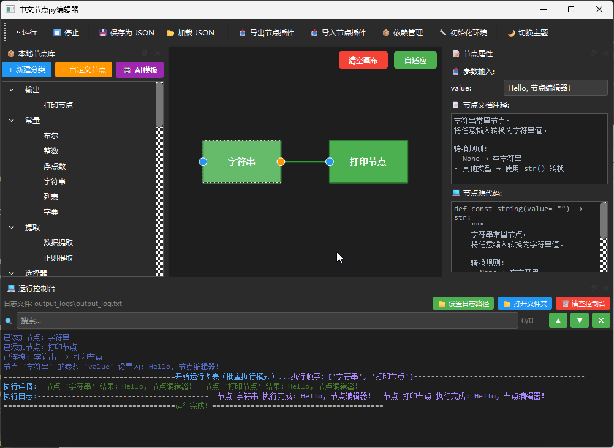
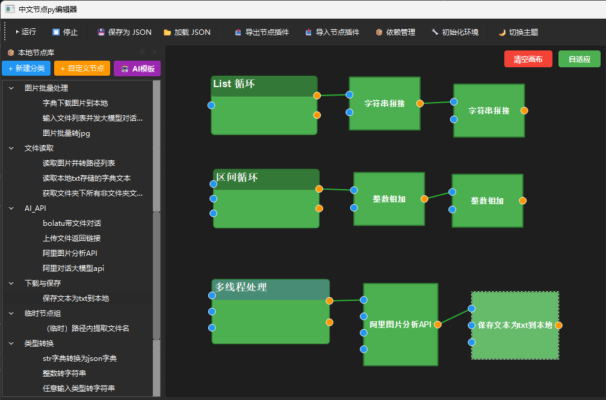
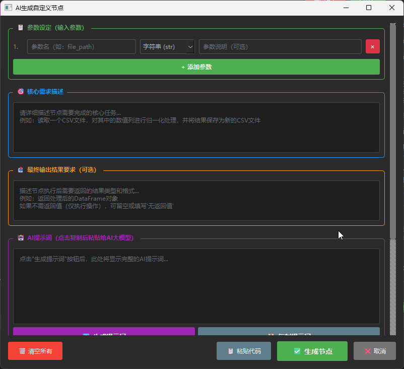

简易中文节点 Python 编辑器
图形化编程 · 拖拽节点 · 数据流图执行
🐍 Python 3.10+
🎨 PySide6 ≥ 6.5.0
📄 MIT License
📌 软件介绍
简易中文节点 Python 编辑器是一款面向非程序员的图形化编程工具。你不需要编写代码，只需通过拖拽节点和连接线条，就能构建可自动执行的程序流程。
适用场景
- ✅ 数据处理与转换
- ✅ 批量文件操作
- ✅ 文本分析与提取
- ✅ 自动化工作流
- ✅ 原型设计与验证
核心特点
| 特点 | 说明 |
|---|---|
| 🀄 中文界面 | 全中文节点名称和操作提示 |
| 🔤 拼音搜索 | 输入拼音首字母即可快速查找节点（如"fds"→"浮点数"） |
| 🧩 可视化编辑 | 拖拽式操作，所见即所得 |
| ⚡ 实时执行 | 点击运行即刻查看结果 |
| 💾 持久保存 | 流程图保存为 JSON 文件，随时加载复用 |
💿 安装与启动
系统要求
| 组件 | 要求 |
|---|---|
| 操作系统 | Windows 7/10/11 |
| 内存 | 至少 2GB 可用内存 |
| 显示 | 支持 1280×720 及以上分辨率 |
安装步骤
- 解压压缩包
- 将下载的压缩包解压到任意目录（建议：
D:\node-python） - 将
python_embedded.zip解压到与node-py.exe同级内
- 将下载的压缩包解压到任意目录（建议：
- 首次启动
- 双击运行
node-py.exe
- 双击运行
- 创建桌面快捷方式（可选）
- 右键点击
.exe文件 → 发送到 → 桌面快捷方式
- 右键点击
💡 开发者模式：如需从源码运行，执行以下命令：
# 1. 创建虚拟环境（推荐）
python -m venv .venv
.venv\Scripts\activate # Windows
# 2. 安装依赖
pip install -r requirements.txt
# 3. 运行应用
python main.py🖥️ 界面概览

主要区域说明
| 区域 | 功能 |
|---|---|
| 工具栏 | 运行、停止、保存、加载、主题切换等全局操作 |
| 节点库面板 | 浏览和搜索可用节点，拖拽添加到画布 |
| 画布区域 | 编辑流程图的主工作区，支持拖拽、连接、框选 |
| 右侧面板 | 显示选中节点的参数、文档和源码 |
| 控制台 | 显示程序运行结果和日志输出 |
🚀 快速入门：第一个流程图
让我们创建一个最简单的"Hello World"流程图。
步骤 1：添加字符串节点
- 在左侧节点库面板中，找到【常量类】→【常量 - 字符串】
- 按住鼠标左键，将其拖拽到画布中央
- 松开鼠标，节点出现在画布上
步骤 2：设置字符串内容
- 点击选中画布上的【常量 - 字符串】节点
- 在右侧参数输入面板中，找到"值"输入框
- 输入：
Hello, 节点编辑器！
步骤 3：添加打印节点
- 在左侧节点库中，找到【输出类】→【打印】
- 将其拖拽到画布上，放在字符串节点的右侧
步骤 4：连接节点并运行
- 将鼠标移动到【常量 - 字符串】节点右侧的橙色圆点（输出端口）
- 按住鼠标左键，拖拽到【打印】节点左侧的蓝色圆点（输入端口）
- 松开鼠标，一条连接线建立完成

🎉 恭喜！你已经成功创建了第一个节点流程图！
🎯 节点操作基础
添加节点的 4 种方法
| 方法 | 操作 |
|---|---|
| 拖拽 | 从节点库拖拽节点到画布 |
| 双击 | 双击节点库中的节点名称 |
| 右键菜单 | 画布空白处右键 → 选择节点 |
| 空格搜索 | 画布上按空格键 → 输入拼音首字母/英文模糊搜索 |
移动与选择
- 移动单个节点：左键拖拽节点
- 选择多个节点：左键框选 或 Ctrl+ 点击
- 取消选择：点击画布空白处
删除节点
- 选中要删除的节点（可多选）
- 按
Delete或Backspace键
复制节点
- 选中节点
- 按
Ctrl+D复制并粘贴（保留连接关系）
视图操作
| 操作 | 方法 |
|---|---|
| 平移画布 | 鼠标中键拖动 |
| 缩放画布 | 鼠标滚轮滚动 |
| 重置视图 | 点击右上角【自适应】按钮 |
| 清空画布 | 点击右上角【清空画布】按钮 |
📦 常用节点详解
1. 常量类节点
用于创建固定值，作为数据流的数据传输和强制格式转换处理。
| 节点名称 | 输入参数 | 输出 | 用途 |
|---|---|---|---|
| 常量 - 布尔 | 复选框 | bool | 真/假值 |
| 常量 - 整数 | 整数输入框 | int | 整数值（如 42） |
| 常量 - 浮点数 | 小数输入框 | float | 小数值（如 3.14） |
| 常量 - 字符串 | 文本输入框 | str | 文本内容 |
| 常量 - 列表 | JSON 编辑器 | list | 数组（如 [1, 2, 3]） |
| 常量 - 字典 | JSON 编辑器 | dict | 键值对（如 {"name": "张三"}） |
示例：创建列表
[1, 2, 3, 4, 5]
- 添加【常量 - 列表】节点
- 在参数输入框中输入：
[1, 2, 3, 4, 5] - 点击其他节点，自动验证格式
2. 输出类节点
| 节点名称 | 功能 |
|---|---|
| 打印 | 输出任意类型的数据到控制台 |
3. 数据处理节点
| 节点名称 | 功能 | 示例 |
|---|---|---|
| 数据提取 | 从字典/列表中提取指定路径的值 | 见下方详解 |
| 数据类型检测 | 检测数据的类型名称 | 输入 42 → 输出 <class 'int'> |
数据提取 - 路径语法
数据源：{"user": {"profile": {"name": "张三", "hobbies": ["阅读", "游泳"]}}}
提取路径 结果
─────────────────────────────────────────
user {"profile": {...}}
user.profile {"name": "张三", "hobbies": [...]}
user.profile.name "张三"
user.profile.hobbies.0 "阅读"
user.profile.hobbies[1] "游泳"4. 内置功能节点
区间循环节点、List循环节点、多线程处理节点的节点输入输出介绍：
- 节点左侧为输入节点
- 节点右侧上节点：迭代值输出节点：
将循环或者多线程需要迭代处理的单独元素传入函数处理的节点组
- 节点右侧下节点：循环 / 多线程 处理汇总输出端口

区间循环 (Range Loop)
生成一个数字序列，常用于重复操作。
参数设置：
- 最小值：0
- 最大值：5
- 步长：1
输出序列：0 → 1 → 2 → 3 → 4List 循环
遍历列表中的每个元素。
输入列表：["苹果", "香蕉", "橙子"]
迭代过程：
第 1 次：当前元素 = "苹果"
第 2 次：当前元素 = "香蕉"
第 3 次：当前元素 = "橙子"多线程处理
并发处理列表数据，适合 I/O 密集型任务。
适用场景：
✅ 批量下载文件
✅ 并发网络请求
✅ 批量读写文件
不适用场景：
❌ 复杂数学计算（CPU 密集型）
❌ 有状态依赖的操作5. 文本处理节点
正则提取
从文本中按模式提取内容。
内置模板：邮箱、手机号、日期、URL、IP 地址、文件名等
自定义正则：
示例文本：CG 渲染_2026-02-26_21-11-27
标记模板：[CG 渲染]_2026-02-26_21-11-27
↑ 方括号内为要提取的内容
生成正则：([^_]+)_\d{4}-\d{2}-\d{2}_\d{2}-\d{2}-\d{2}🔧 高级功能
1. 代码自定义节点
你可以用 Python 代码创建自己的节点！
步骤：
- 点击【本地节点库】→【自定义节点】
- 在代码编辑区输入：
def mul(a: int, b: int) -> int: """ 乘法运算节点。 输入两个数字，返回它们的乘积。 """ return a * b - 点击【生成节点】
- 选择一个当前分类 或者 新建分类
- 新节点出现在指定分类中
注意：
- 代码中的函数名尽量使用英文，可自定义中文节点名
- 参数类型决定输入控件（
int→整数框，str→文本框） - 返回类型决定是否有输出端口
2. AI 节点生成器

让 AI 帮你写节点代码！
步骤：
- 点击工具栏【🤖 AI 模板】
- 输入输入参数设定，可点击【添加参数】增加多个输入参数，并且指定输入参数类型
- 输入核心需求描述，例如：
创建一个节点，输入是一个 Excel 文件路径，输出是 pandas DataFrame 的前 10 行数据。
- 如果有返回函数，需要输入最终输出结果要求，例如：
输出是List(json列表结果)，输入表格 pandas DataFrame 的前 10 行数据。
- 点击【生成提示词】
- 点击【复制提示词】，然后交给“豆包”或者“deepseek”等第三方Ai
- 将Ai返回结果粘贴到自定义节点编辑器
- 输入节点显示名称
- 点击【生成节点】
- 选择节点保存分类（可新建），完成节点创建
3. 节点组
将多个节点打包成组，便于管理和复用。
创建节点组：
- 框选多个节点（至少 2 个）
- 按
Ctrl+G或右键 →【创建节点组】 - 组可以整体移动
4. 节点插件管理
导出插件（分享给他人）：
- 工具栏 →【📤 导出节点插件】
- 选择要导出的自定义节点
- 保存为
.json文件
导入插件（使用他人节点）：
- 工具栏 →【📥 导入节点插件】
- 选择插件 JSON 文件
- 确认后节点添加到库中
⌨️ 快捷键速查
编辑操作
| 快捷键 | 功能 |
|---|---|
Delete / Backspace | 删除选中节点 |
Ctrl+D | 复制并粘贴（保留连接） |
Ctrl+G | 创建节点组 |
Space | 画布右键搜索菜单 |
视图操作
| 操作 | 方法 |
|---|---|
| 平移 | 鼠标中键拖动 |
| 缩放 | 鼠标滚轮 |
选择操作
| 操作 | 方法 |
|---|---|
| 框选 | 左键拖动框选 |
| 增选 | Ctrl/Shift + 框选/点击 |
| 取消选中 | 点击画布空白处 |
📞 获取帮助
技术支持
如有问题，请提供以下信息：
- 问题复现步骤
- 截图或日志文件（
output_logs/output_log.txt）